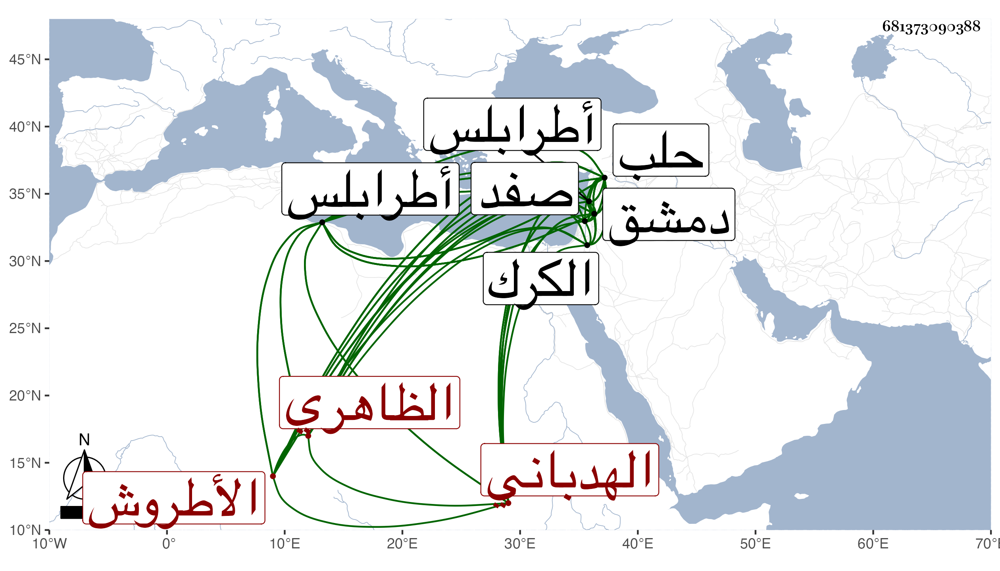

0902Sakhawi.DawLamic.ITO20230111-ara1.EIS1600.681373090388
Biography ID: 681373090388
1011
أقبغا العلاء الهدباني الظاهري برقوق الأطروش ، ولي لأستاذه بعد رجوعه إلى اللنكية من الكرك الحجوبية الكبرى بحلب ثم نيابة صفد ثم طرابلس ثم حلب عوضا عن ارغون شاه في سنة إحدى وثمانمائة وأسس بها جامعه ولم يكمله ثم أمسكه الناصر لكونه ممن أعان تنم نائب دمشق فلما انكسر تنم أسر أقبغا فيمن أسر ثم أطلقه الناصر ثم ولاه نيابة طرابلس سنة أربع ثم دمشق ثم أعيد إلى حلب بعد دقماق واستمر على نيابتها أربعين يوما ثم مات في ليلة الجمعة سابع عشري جمادى الثانية سنة ست ودفن قبل الصلاة بتربته التي أنشأها داخل جامعه ، وكان ساكنا عاقلا قليل الشر مائلا إلى الخير ذكره ابن خطيب الناصرية ثم شيخنا .
